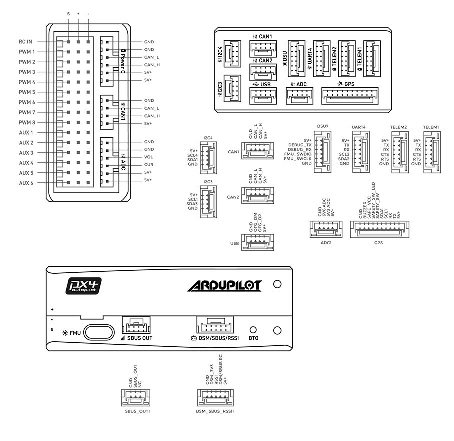

CUAV Nora Overview¶
{kind=link}
Nora ® is an advanced autopilot independently designed by CUAV ®. It uses a higher-performance STM32H7 processor and integrates industrial-grade sensors and ultra-low temperature drift sensors. Compared with previous autopilots, it has better performance and more reliability. Nora is ideal for academic research and commercial systems integration.
Other characteristics¶
Internal shock absorption
Ports on the sides
Supports High Speed USB (480mb/s), can download logs faster
Supports more DShot outputs
Supports IMU temperature control, making the sensor more consistent
Dedicated DroneCAN battery port
3 sets of IMU sensors
Specifications¶
Processor
32-bit STM32H743 main processor
480Mhz / 1MB RAM / 2MB Flash
Sensors
InvenSense ICM20689 accelerometer / gyroscope
InvenSense ICM20649 accelerometer / gyroscope
Bosch BMI088 accelerometer / gyroscope
2 MS5611 barometer
RM3100 Industrial grade magnetometer
Power
Operating voltage: 4.3~5.4V
USB Input: 4.75~5.25V
High-voltage capable servo rail, up to 36V (servo rail does not power the autopilot)
Dual voltage and current monitor inputs
Nora can have triple redundant power (If 3 power sources are provided) to both battery monitor inputs and the USB port
Interfaces
14 PWM servo outputs (12 support DShot)
Analog/ PWM RSSI input
2 GPS ports (GPS and UART4 ports)
4 I2C buses (Two I2C dedicated ports)
2 CAN bus ports
2 Power ports (Power A is an ADC interface, Power C is a DroneCAN battery interface)
2 ADC input ports
2 USB ports (Type C and JST-GH1.25)
Other
Weight: 75g
Size: 46mm x 64mm x 22mm
Operating temperature: -20 ~ 80°C (Measured value)
Default UART Order¶
SERIAL0 = console = USB
SERIAL1 = Telemetry1 = USART2 (TELEM1)
SERIAL2 = Telemetry2 = USART6 (TELEM2)
SERIAL3 = GPS1 = USART1 (GPS)
SERIAL4 = GPS2 = UART4 (UART4)
SERIAL5 = USER = UART8
SERIAL6 = USER = UART7 (DEBUG TX/RX)
SERIAL7 = USER = UART3
Serial protocols can be adjusted to personal preferences.
DShot Capability¶
All motor/servo outputs are DShot and PWM capable. However, mixing DShot and normal PWM operation for outputs is restricted into groups, ie. enabling DShot for an output in a group requires that ALL outputs in that group be configured and used as DShot, rather than PWM outputs. The output groups that must be the same (PWM rate or DShot, when configured as a normal servo/motor output) are: 1-4, 5-8,and 9-12. Outputs 13 and 14 are not DShot capable.
Battery Monitor¶
The autopilot includes a DroneCAN power module and battery monitor, CUAV CAN/DroneCAN Power Module. Connect to one of the CAN ports and it is already pre-configured for use.
Where to Buy¶
Pinouts¶
{kind=link}
Flight video¶
More Information¶
[copywiki destination=”plane,copter,rover,blimp”]